| |
Manual |
This US-SOMO module was conceived to allow joining Multi-Angle Light Scattering (MALS) and Small-Angle X-ray Scattering (SAXS) data collected in sequential or parallel fashion on the same sample, and pre-processed to put them on the same absolute scale (see here and here).
In the image below, the initial screen of the US-SOMO MALS+SAXS module is shown:
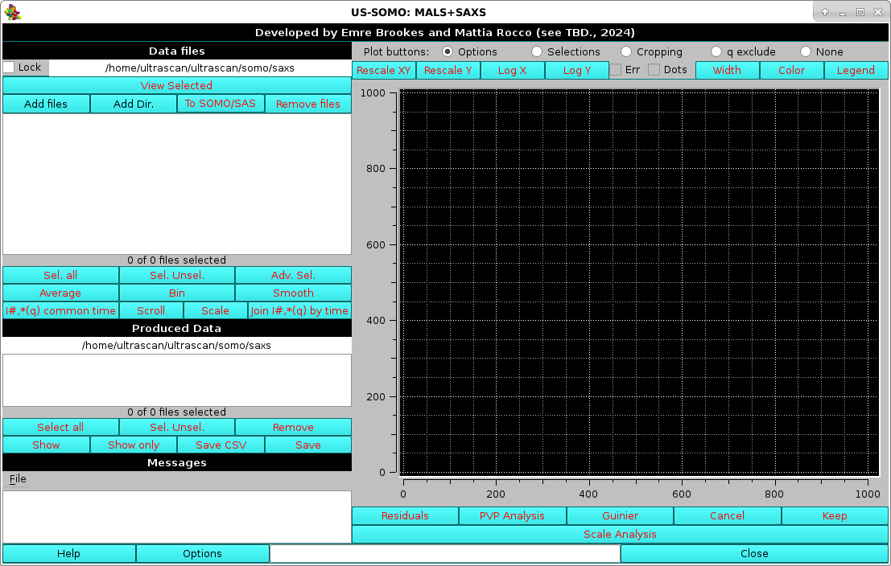 |
As with all other US-SOMO modules, the buttons with the black labels are the ones currently active, and the ones with the red labels are currently inactive but will become active (turning black) when allowed by the processing/visualization stage.
The left side of the window is divided in three sections, labeled "Data files", "Produced Data", and "Messages". By clicking on these labels, the corresponding panel below each label will disappear, allowing for an expansion of the remaining other panel(s). If every panel is made to disappear, the main graph will expand to cover the full size of the MALS+SAXS module window. By clicking again on the labels, the corresponding panels will be restored.
At the top of the left-side panel, you can pre-select a directory where your data are stored. Clicking on this field (shown in the picture above is the /home/ultrascan/ultrascan/somo/saxs path) will open a directory navigator where you can selected another directory. Checking the Lock checkbox will make the selected directory the default one upon re-starting the application.
In the top left panel (Data files) there are five buttons:
As an example involving data collected in kinetics mode, in the images below we show the loading of fibrin re-polymerization data in which fibrin monomer at 0.8 mg/mL obtained from a thrombin-generated fibrin clot dissolved in CH3COONa 100 mM/CH3COOH 110 mM, pH 4.6, and then subjected to preparative SEC, was mixed in a 1:1 ratio with a TRIS-base 65 mM, NaOH 57 mM, NaCl 100 mM, pH 12.6 buffer, obtaining a final buffer composition of TRIS-base 6 mM/TRIS-NH4+Cl- 265 mM, CH3COONa 105 mM, NaCl 23 mM, pH 7.425 that allows re-polymerization. The rapidly mixed solution was injected sequentially in the MALS and SAXS flow cells (data collected with a dedicated facility at the SWING beamline of the Synchrotron SOLEIL, Gif-sur-Yvette, France).
The MALS and SAXS original data were first processed with the US-SOMO MALS and HPLC/KIN modules to produce I*(q,t) vs. q datasets on the same, absolute scale (units: [g/mol]).
We begin by loading the MALS data using the Add files button and then pressing Sel. all (see here for its description):
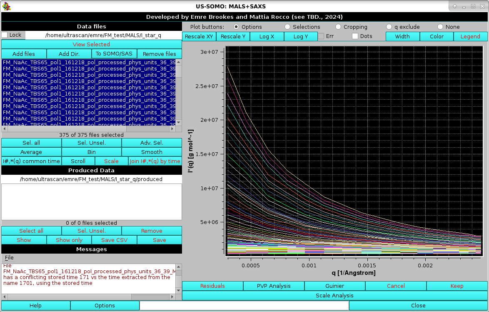 |
Note that the correct units in the X and Y axes are now displayed. Note also that at the bottom of the Messages section, a warning in red color is printed, alerting of conflicts between the time stored in the filename and the actual collection time stored inside the file, which can be checked by selecting only the file(s) listed in the warning message(s) and pressing View Selected:
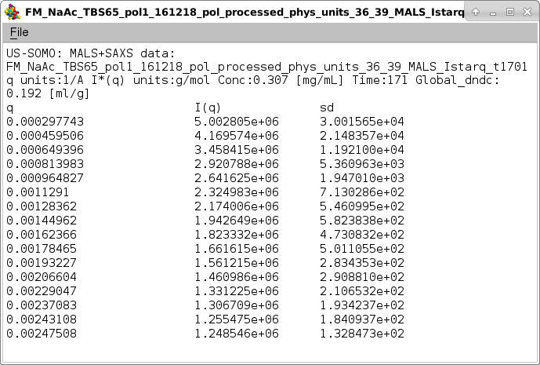 |
The source of this error, which was automatically corrected on loading the file(s) as indicated in the warning message, has been found and corrected in the US-SOMO MALS module. Nevertheless, this kind of check is maintained to correct similar and yet undiscovered potential errors in the file-naming process.
Before loading the corresponding SAXS data, we change the view to double logarithmic scale by pressing the Log X and Log Y buttons at the top of the graphic window (the name of these buttons will then change to Lin X and Lin Y; see here for a full description of the Plot buttons utilities):
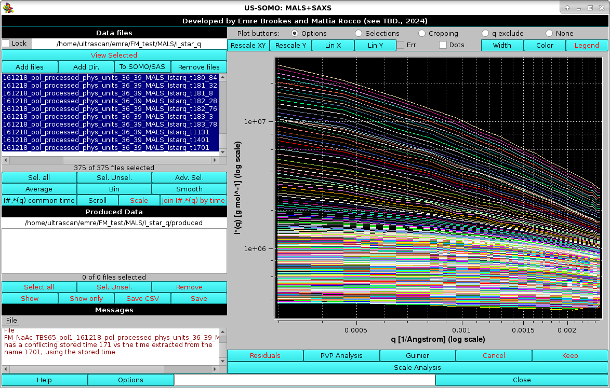 |
We can now add the corresponding SAXS data, by using again the Add files button and pressing Sel. all again:
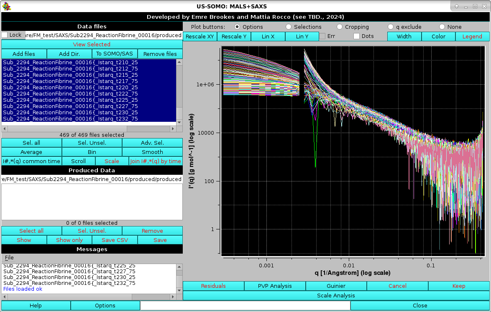 |
Note that some of the SAXS data files have a pronounced upturn at low q-values, potentially inicating some capillary fouling. We will deal with this problem later on (see here).
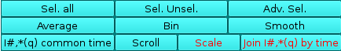 |


On pressing I#,I*(q) common times, the two datasets are first analyzed, and a pop-up message will report the findings:
 |
listing the number of individual files with their starting and ending times, and the q-values covered, followed by the determined common time range. Pressing "Ok" will allow the creation of the MALS new dataset with I*(q,t) vs. q datasets having common times with the corresponding available SAXS datasets.
Before completion, a second pop-up will appear:
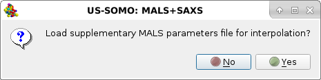 |
asking if there are other MALS-derived sets of time-dependent parameters (such, e.g., the weight-average molecular weight Mw or the rms z-average radius of gyration [<Rg2>z]0.5) that might be put on a common time scale with SAXS-derived parameters. Pressing "Yes" a directory browser will open allowing selecting a csv-type file where in separate columns the times and the parameters' values must be present (not shown). Pressing "No" the programs will just complete the operation:
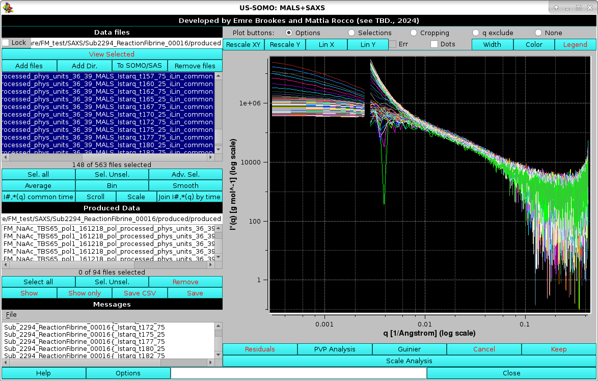 |
automatically selecting in the graphics window the newly created MALS I*(q,t) vs. q datasets having the same times of the already selected SAXS datasets. This new set of data has "iLin_common" appended to their filenames, and they will also appear in the Produced Data section.
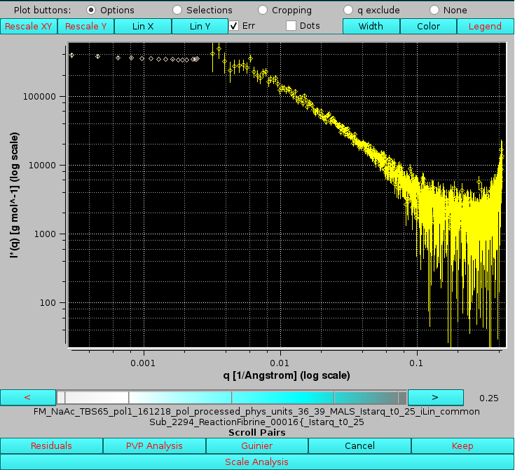 |
starting from the first time point. Here we have changed the representation from dots connect by a line to symbols with their associated error bars by selecting the Err checkbox in the Options submenu on top of the graphics windows (see here). The names of the joined MALS+SAXS frames are reported below the cyan-scale bar-wheel, and the time being examined is reported to the right of the bar-wheel.
Scrolling is performed by either using the cyan-scale bar-wheel, or by clicking on the the "<" and ">" buttons placed at its sides, and can be used to check how the select common time MALS+SAXS frames behave:
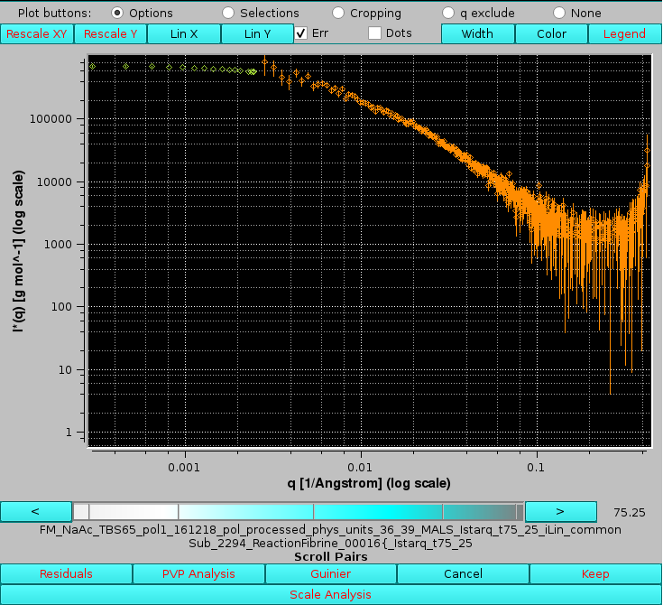 |
Pressing Cancel in the line of buttons below the graphics window will exit from the Scroll function.
Before describing the last two buttons in this panel (Scale and Join I#,I*(q) by time), let's first describe other panels and functions.
The file names of data produced in this module are shown in the Produced Data panel to the centre-left, and can be selected and saved to files using the appropriate buttons below it.
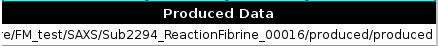 |
By clicking on the file path shown below the Produced Data label, a file system navigator will open, allowing selecting a different directory and/or creating a new one.
Several buttons are available in this panel:
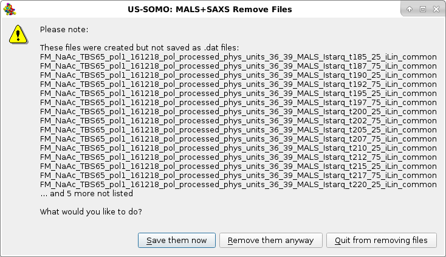 |
Two types of files can be produced:
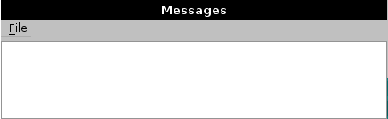 |
The bottom line of this module contains the Help, Options, and Close buttons, with in between a progess bar showing in blue color and with a numeric % value the advancement of the currect action:
 |
On pressing Options, a pop-up panel will be shown:
 |
See here for a description of this module.
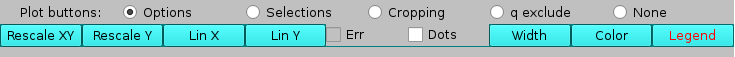 |
The Options checkbox will enable these buttons:
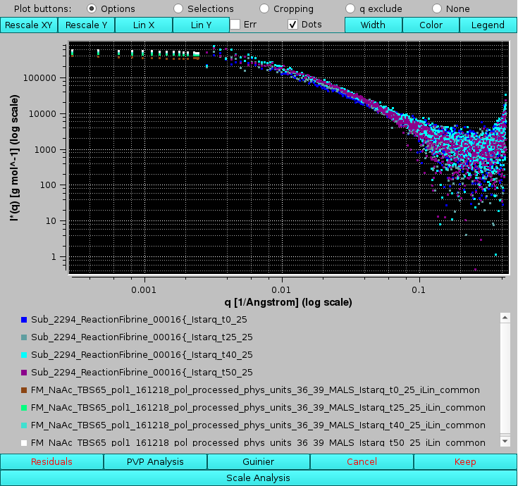 |
By selecting the Err checkbox, the Legends disappear, and the Width button has to be pressed three times to obtain this image:
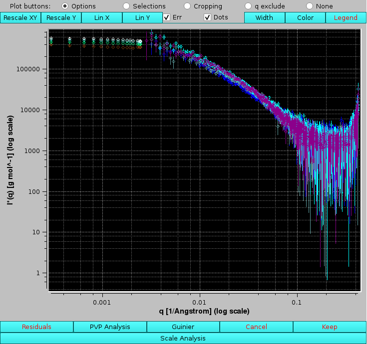 |
The Selections checkbox will enable these buttons:
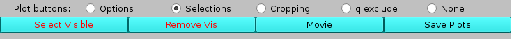 |
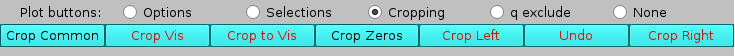 |
When a part of the graph is selected using the mouse/left button, the buttons become all available (only Crop Zeros and Crop Common are available when files are just displayed after selection).
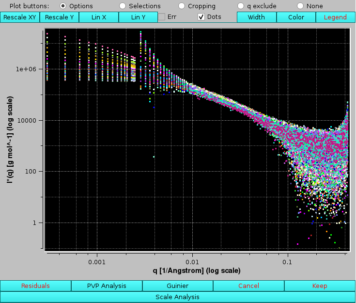 |
We beging by zooming on the region where we want to remove the "bad" datapoints:
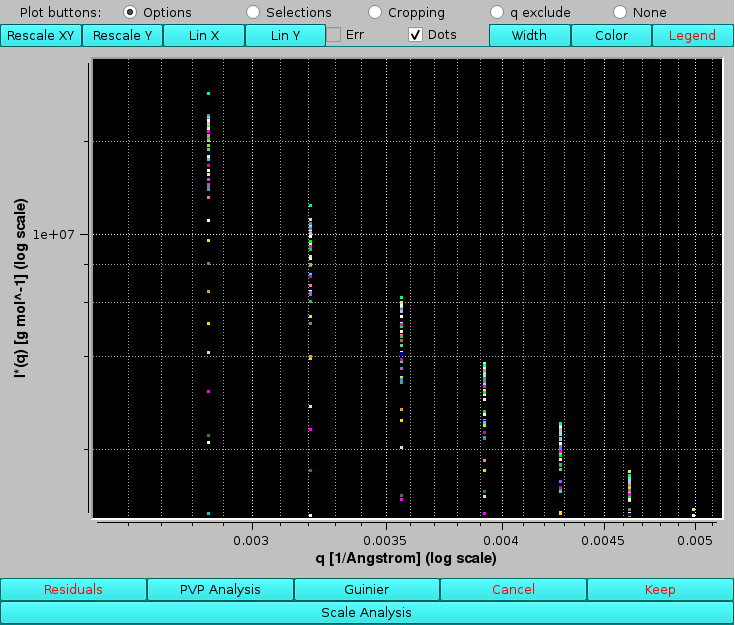 |
By pressing Crop Vis the shown datapoints will be removed from each SAXS file, as can be seen by zooming out and showing the data as points connected by lines:
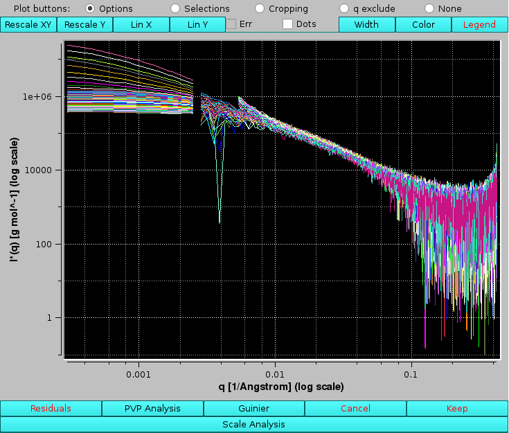 |
The q exclude checkbox will enable these buttons:
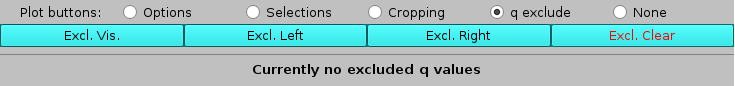 |
This utility was developed to allow excluding "bad" q-values from the scaling procedure utilized to optimize the MALS and SAXS datasets on the y-axis (see here). The "Currently no excluded q values" label appears on selecting this checkbox if no previous action was taken in this respect. The utility works by selecting with the mouse a zone containing a q-values range, and then operating with the provided buttons.
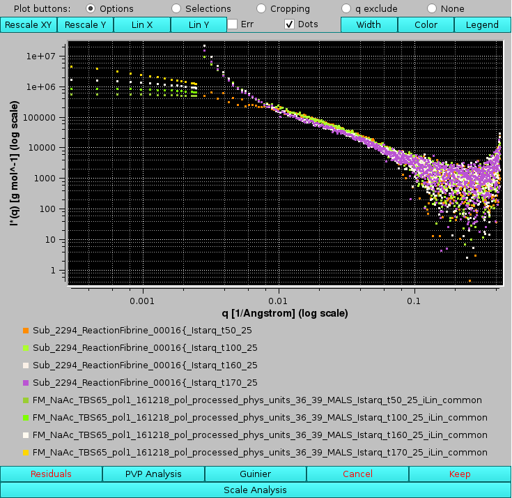 |
After reverting to the Err visualization mode, by selecting the lowermost three SAXS q-values with the mouse and pressing Excl. Vis one obtains this result, where in the graphics window the three selected q-values have been listed and marked as "excludeed" by a red cross:
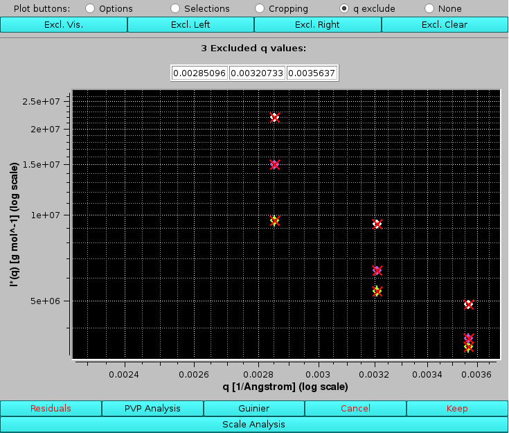 |
We can now return to the second section of buttons below the window with the loaded files listing:
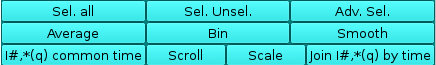 |
to describe the use of the two last buttons.
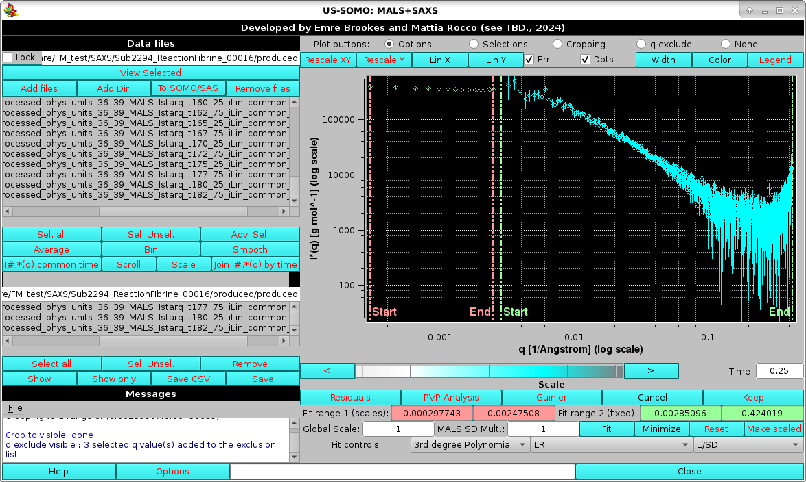 |
Here, the Err checkbox has been selected to show the associated error bars.
Two sets of dashed vertical lines are now displayed, with associated fields having their background color matching the vertical dashed lines colors. On the left side, the pink vertical dashed lines mark the beginning ("Start") and the end ("End") of a zone in the MALS data to be used in the scaling procedure againts the corresponding SAXS data. The corresponding fields are indicated by the "Fit range 1 (scales)" label; "scales" signifies that is this dataset that will be scaled against the other dataset (but at the end of the procedure the scaling can be reversed, see below). On the right side, the light green vertical dashed lines mark the beginning (Start") and the end ("End") of a zone in the SAXS data against which the corresponding MALS data will be scaled. The corresponding fields are indicated by the "Fit range 2 (fixed)" label.
We beging by adjusting these ranges, by either typing new q-values in the provided fields, or, after having clicked in the corresponding field, by using the cyan-scale bar-wheel, or clicking on the "<" and ">" buttons placed at its sides. The currently shown and used common time point is indicated in the field to the right of the cyan-scale bar-wheel, and can be changed by clicking on this field and using the bar-wheel or the "<" and ">" buttons placed at its sides.
Normally, the range should be restricted to the 5-6 highest MALS q-values, and to the ∼20 lower q-values SAXS points (sometimes excluding the very noisy intial q-values, which in the example shown are been already excluded as indicated on the top of the graph if the q exclude checkbox is checked, and in any case by the red crosses on the plot):
Below the ranges fields there are two additional fields and four new buttons.
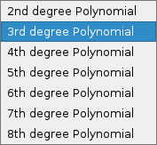 |
with a 3rd degree polynomial being the default option.
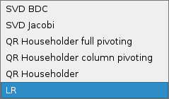 |
with the LR (Linear Regression) method being the default choice. A description of the other methods available can be found here (to be added).
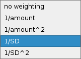 |
including no weighting, 1/amount (that is, the inverse of each data point), 1/amount^2 (that is, the inverse of the square of each data point), 1/SD (the default choice), and 1/SD^2.
This test fit could be also applied to other MALS+SAXS common time datasets, to verify the appropriateness of all the chosen fitting parameters.
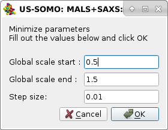 |
where values for the minimum ("Global scale start:"; default: 0.5) and maximum ("Global scale end:"; default: 1.5) scaling factor limits, and the step size (default: 0.01) can be chosen. Pressing "Cancel" will abort the operation, pressing "Ok" will launch it. On the graphics window, the steps of the global fitting procedure overlaid to the cureently selected MALS+SAXS common time dataset will be shown, followed by the final global vertical scaling results with its value now printed in the Global scale: field:
Note that the Global scale: value, 1.49, is practically equivalent to the Global scale end: utilized value, 1.5, and both the fit red line and the normalized χ2 ("nChi^2") for this fit, 1.19225, and its average value for all fits, 17.209 for 74 curves, reported below the Fit controls line, are not optimal. The high average χ2 value is mainly due to the capillary fouling present after a certain time point, as can be seen by selecting the t=92.75 s time point and pressing Fit (Width on the Options Plot buttons was also pressed once):
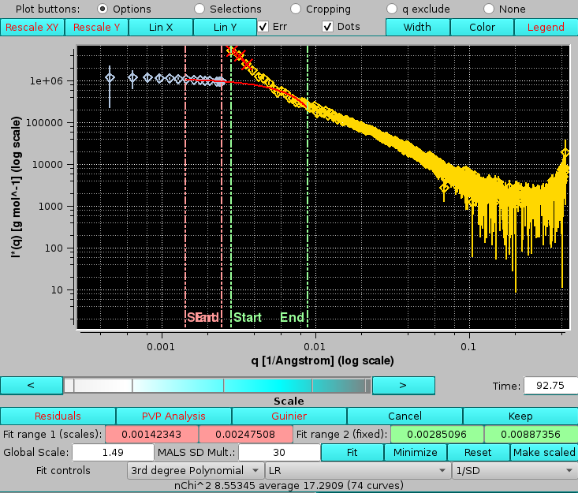 |
where the n&xhi;2 value is already quite high, 8.55345, notwithstanding the exclusion from the fit of the first 3 SAXS q points. To try and improve the scaling, we can select MALS+SAXS datasets only up to common time 70.25 s, and extend the SAXS q-range to ∼0.01 Å-1, with this Global scaling results:
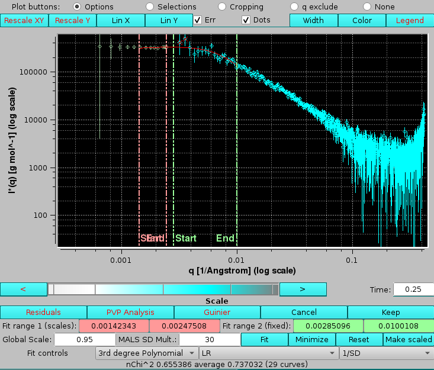 |
where the Global scale is now 0.95, and nχ2 for the initial time point (t=2.5 s) fit, ∼0.655, and its average value for all fits, ∼0.737 for 29 curves, is also excellent. Increasing the MALS SD multiplier to 50, and using a 4th degree polynomial yields similar results:
with a Global scale of 1.02, a nχ2 for the initial time point (t=2.5 s) fit of ∼0.546, and an average nχ2 value for all fits of ∼0.597 for 29 curves. The improvement in nχ2 values is also due to the larger MALS SD values, besides the higher degree of freedom of the 4th degree polynomial.
This is done by reloading all SAXS and MALS common time datasets, and the module will show the kept parameters as used/derived from the previous scaling minimization with fewer datasets, and apply them to any other dataset that is now loaded. This can be seen the previously examined t=92.75 s time point:
Obviously, the nχ2 for this time point, and its average value for all fits, are worse than when the entire dataset scaling was minimized, but this is because the presence of not-excluded low-q SAXS points that are clearly affected by the capillary fouling.
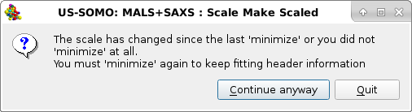 |
Pressing "Quit" will abort this operation. For instance, we can change the MALS SD multiplier value used in the minimization process to another value, since these modified MALS SDs can replace the original ones in the final joined MALS+SAXS datasets (see below). In this case, we aborted the operation and changed the MALS SD multiplier value to 30, and restarted the process, pressing "Continue anyway" this time. Another pop-up will appear, asking which one of the two datasets should be scaled in respect to the other:
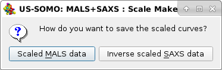 |
Since the MALS data have the lower q-values, that are important in the determination for instance of <M>w by Guinier fitting or in other fitting procedures, it is suggested to scale the SAXS data, unless there are reasons to believe that their absolute intensity values are more reliable than those of the MALS data. Therefore, in this example we press "Inverse scaled SAXS data", and the scaling utility will process all datasets.
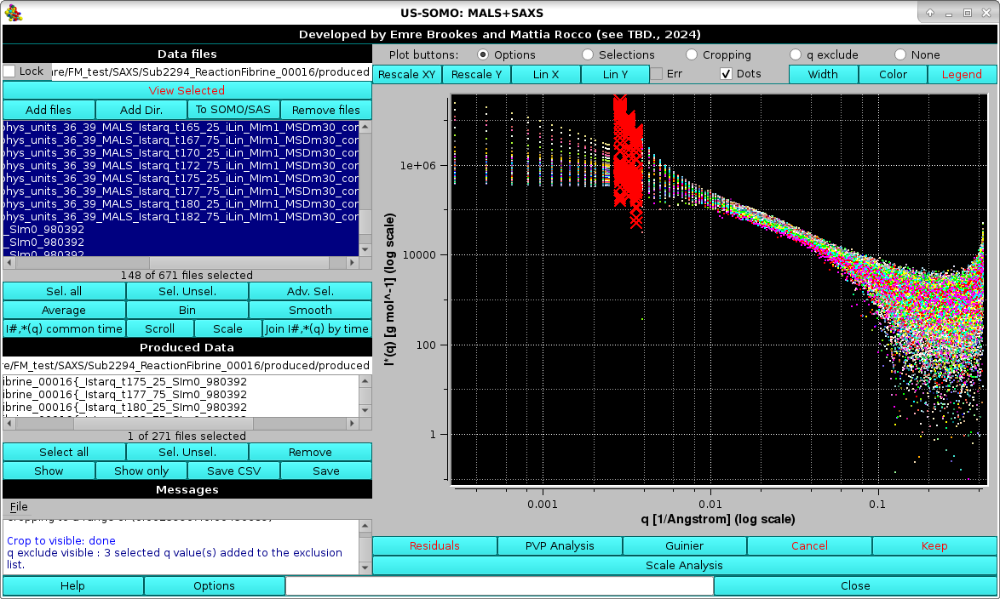 |
In the newly generated MALS common time files, the string "MSDm30" (MALS SD multiplier 30) has been added to their filenames to indicate that the MALS SD values were all multiplied by 30. In the newly generated, scaled SAXS files, the string "SIm0_980392" (SAXS Intensity multiplier 0.980392, the inverse of the previously determined scaling factor for MALS datasets) was added at the end of their filenames to indicate that they were scaled by that value.
If we select one of the newly generated MALS common time files and press View Selected, we can see that all the information about its processing, and the x and y units, are recorded in its header:
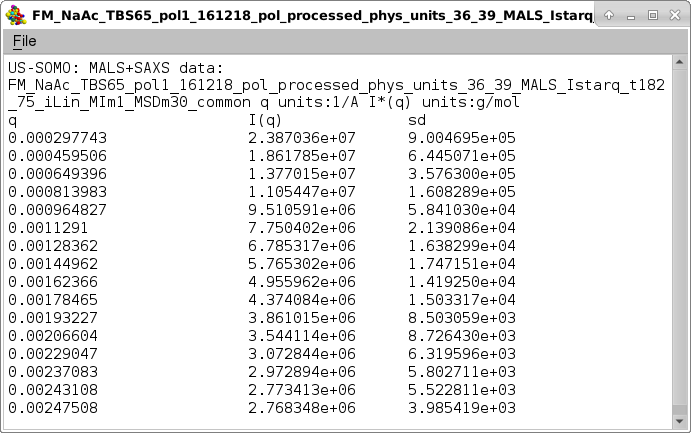 |
If we select one of the newly generated SAXS scaled files and press View Selected, we can see that all the information about its processing, and the x and y units, are recorded in its header:
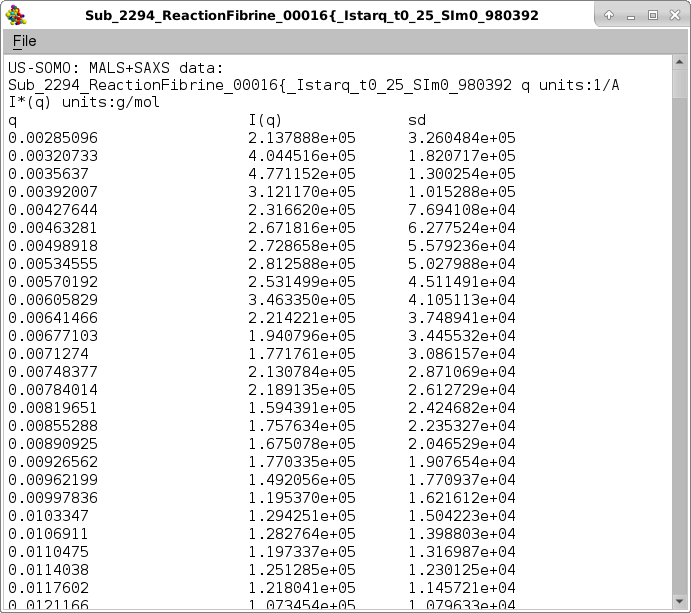 |
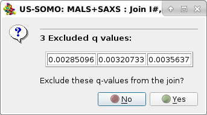 |
Pressing "No" will maintain those q-values in the joined files, pressing "Yes" will remove them for every joined file. In this example, we press "Yes", and at the end of the joining process the newly created MALS+SAXS datasets will be automatically displayed:
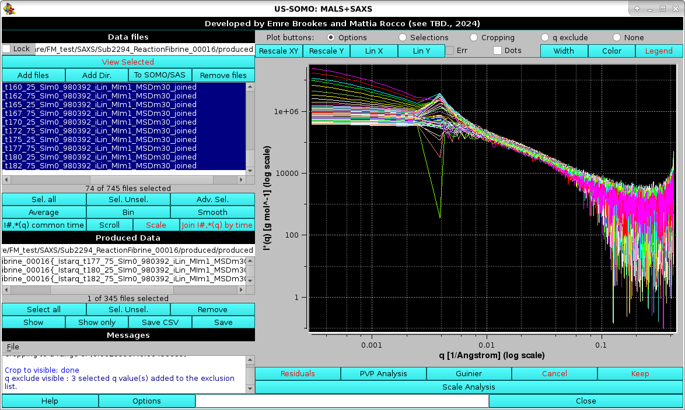 |
where the datasets are wisualized as points connected by lines. Tthe resulting filenames have the SAXS datasets root and other information, terninating with "_joined".
The joined MALS+SAXS datasets can also be individually seen using the Scroll button, as in this example:
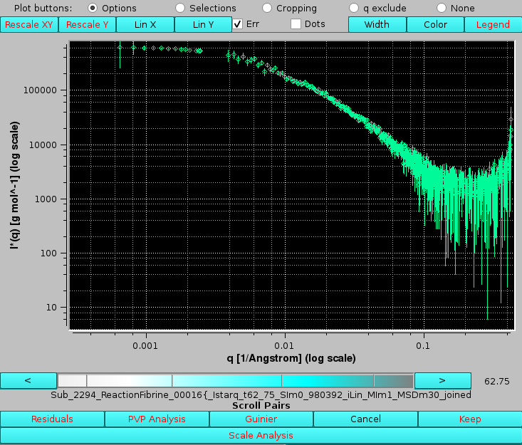 |
This document is part of the UltraScan Software Documentation
distribution.
Copyright © notice.
The latest version of this document can always be found at:
Last modified on September 25, 2024